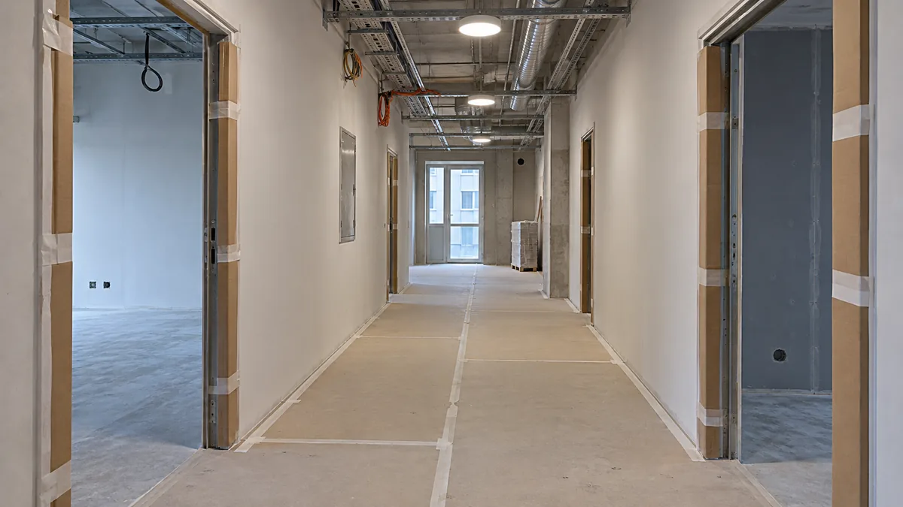

Etusivu / Datakeskustyömaat
Aputyöt datakeskuksen työmaalle.
Perehdytetty ryhmä hoitaa materiaalien siirrot, suojaukset ja työmaan siisteyden. Asennusryhmät voivat keskittyä omaan työhönsä kohteen ohjeiden mukaan.

Työmaamalli
Mitä ryhmä tekee missäkin vaiheessa.
Toimintamalli
Pysyvä ryhmä tuntee työmaan.
| Gene-Worksin pysyvä ryhmä | Yksittäiset tekijät | |
|---|---|---|
| Kuka työn tekee | Sama ryhmä, joka on suoraan Gene-Works Oy:n palveluksessa | Tekijät voivat vaihtua hankkeen aikana |
| Perehdytys | Ryhmä perehdytetään kohteeseen ennen ensimmäistä työpäivää | Jokainen uusi tekijä perehdytetään erikseen |
| Talvi | Ryhmä siirtyy sovittuihin talvitöihin ja palaa päivittäisiin tehtäviin | Lumitöihin hankitaan tekijät erikseen |
| Ammattityöt | Katto-, pelti- ja julkisivutyöt samalta yritykseltä | Ammattityöt hankitaan muualta |
Kortit ja asiakirjat
Kaikki valmiina ennen ensimmäistä työpäivää.
- Valttikortti ja työturvallisuuskortti
- Henkilöstöllä
- Korkealla työskentelyn koulutus
- Putoamissuojaus työmaan turvallisuussuunnitelman mukaan
- Työmaakohtainen perehdytys
- Turvallisuussäännöt, kulkureitit ja sovitut tehtävät
- Kulkuluvat
- Käydään läpi tilaajan kanssa ennen aloitusta
- Tilaajavastuuselvitykset
- Toimitetaan pyynnöstä
Koko Suomi.
Toimimme koko Suomen alueella.
Kysymykset
Usein kysyttyä
Mitä tehtäviä aputyöryhmä hoitaa datakeskustyömaalla?
Tehtäviin voivat kuulua kuormien vastaanotossa ja purkamisessa avustaminen, materiaalien siirrot, rakennusjätteen lajittelu, pintojen ja kulkureittien suojaus sekä rakennus- ja asennusryhmien avustaminen.
Voidaanko ryhmän kokoa muuttaa hankkeen edetessä?
Ryhmän koon, työaikojen ja päivittäisten tehtävien muutoksista sovitaan työmaan tarpeen mukaan.
Toimitatteko tilaajavastuulain mukaiset dokumentit ennen sopimusta?
Kyllä. Toimitamme tilaajavastuulain mukaiset selvitykset tilaajalle pyynnöstä.